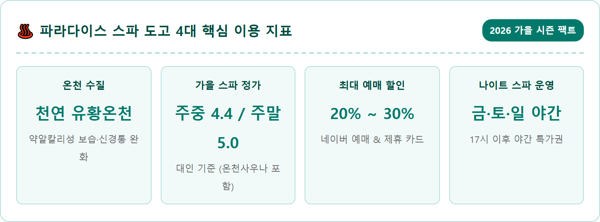
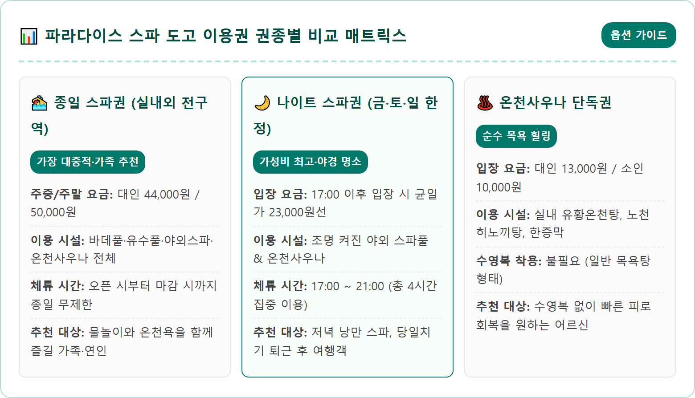
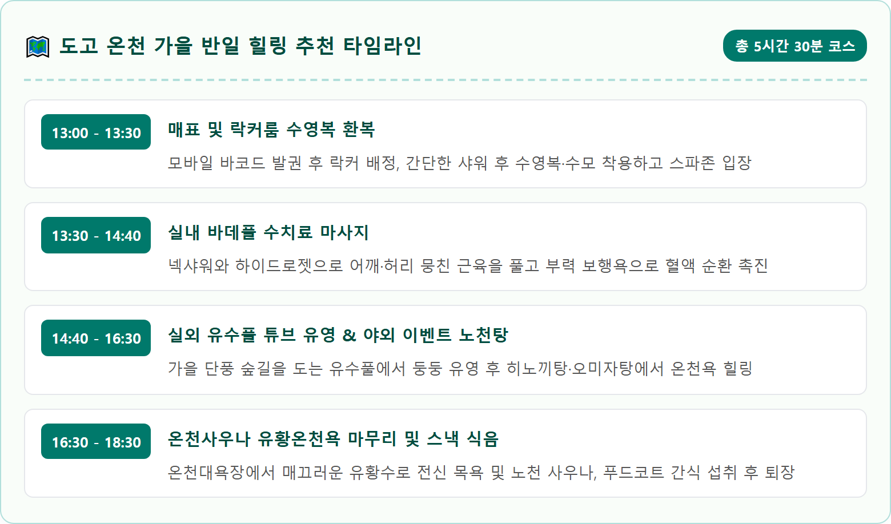
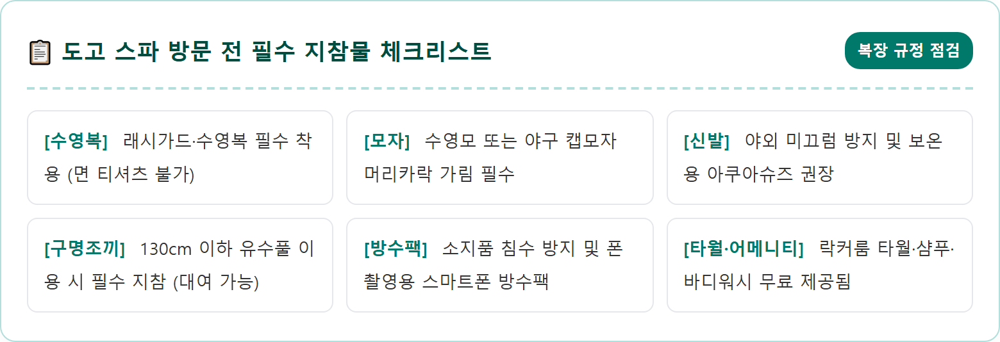
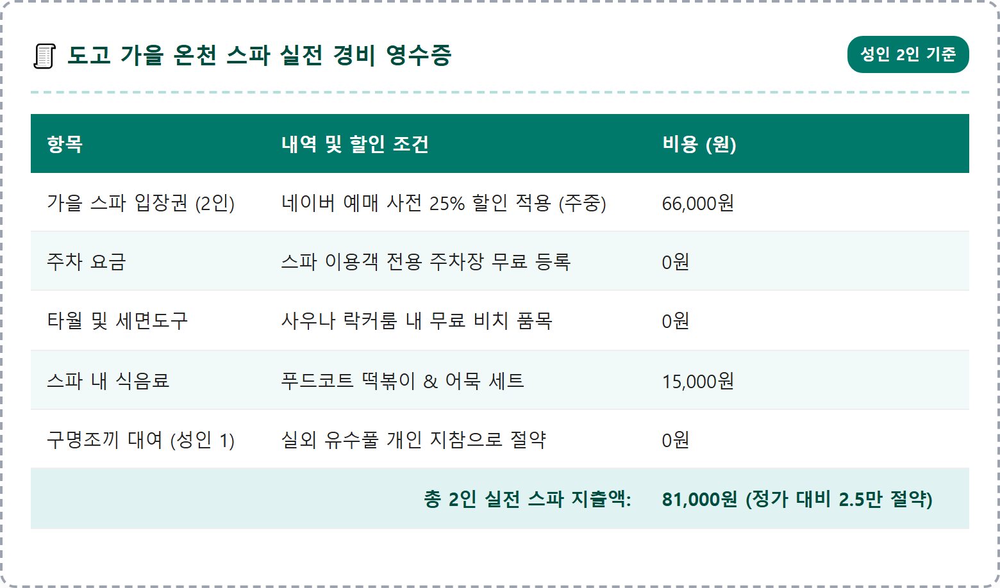

A breathtaking, photorealistic eye-level photograph of the outdoor open-air hot spring spa at Paradise Spa Dogo in Asan, South Korea, during a crisp autumn afternoon in late October. Crystal clear steaming sulfur mineral thermal water fills the outdoor infinity pool and stone hinoki baths, with gentle translucent steam rising peacefully into the cool autumn air. Surrounding slopes are adorned with vibrant fall foliage in vivid crimson, amber, and golden yellow colors. Subtle warm twilight lighting illuminates the wooden pool decks and soothing stone architectural landscape. Elegant, peaceful wellness resort atmosphere, shot on 35mm lens, high resolution 8k, photorealistic quality, 1:1 aspect ratio.




